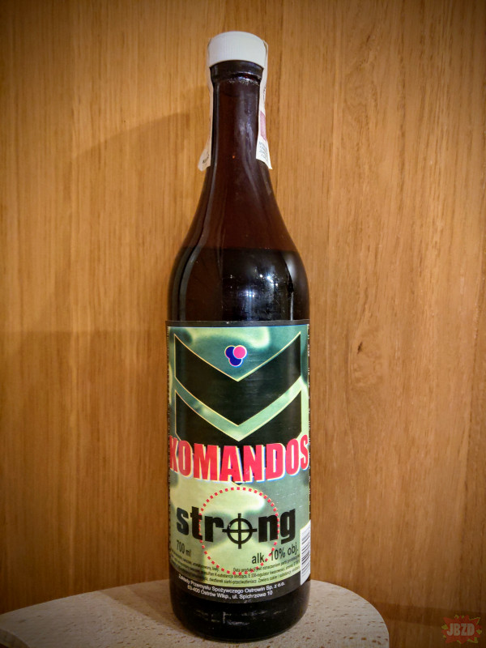
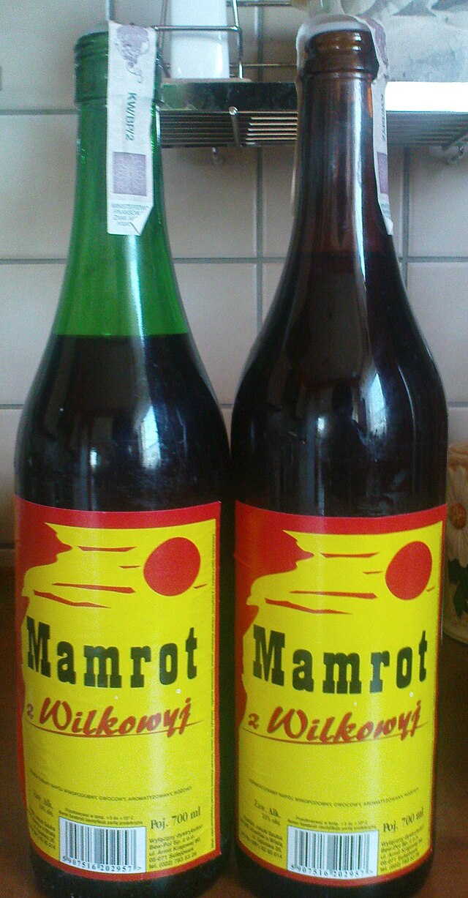
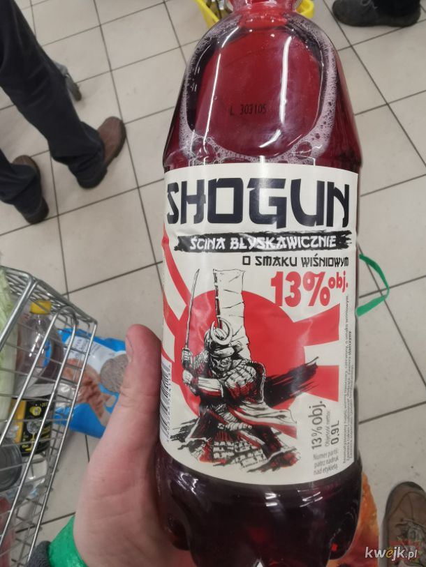

Uwaga! Alkohol szkodzi Twojemu zdrowiu!

To wino jest jak prawdziwy komandos – nie widać go do momentu, aż cię
zaskoczy! Z butelki wynurza się subtelny aromat, który po chwili
zaatakuje twoje kubki smakowe z siłą oddziału specjalnego. Idealne do
wspomnień o wojskowych przygodach lub do chowania się w ciemnych
zakątkach piwnicy. Smak tak nieuchwytny, że zanim zorientujesz się, że
to wino, butelka już jest pusta.

Mamrot to wino, którego nazwa mówi sama za siebie – po kilku
kieliszkach będziesz mamrotać jak po najgorszej imprezie w życiu. Ma
barwę tak nieokreśloną, że nawet eksperci od kolorów wpadają w
konsternację. Aromat? Cóż, to jak próba rozszyfrowania tajemniczego
kodu, który okazuje się być przepisem na chałwę. Smak jest jak
zagadka, której rozwiązanie jest zarazem zaskakujące i nieco
przerażające, ale zawsze dobre na towarzyskie spotkania.

Shogun to wino, które przeniesie cię wprost do feudalnej Japonii,
tylko zamiast samurajów spotkasz tu przeróżne nuty smakowe, które
walczą między sobą o dominację. To wino, którego etykieta jest
bardziej interesująca niż sam trunek, bo sugeruje egzotyczne przygody,
podczas gdy smak przypomina raczej walkę o przetrwanie w podmiejskim
sklepie monopolowym. Jest jak ninja – niepozorne, ale potrafi
zaskoczyć, zwłaszcza kiedy najmniej się tego spodziewasz.